Prof. Nien-Lin Hsueh Department of Information Engineering Feng Chia University
「這個國家的每一個人都應該學習如何寫程式，因為它教你如何思考。」 — 史蒂夫·賈伯斯 (Steve Jobs), 蘋果公司聯合創辦人
「這個國家的每一個人都應該學習如何寫程式，因為它教你如何思考。」
— 史蒂夫·賈伯斯 (Steve Jobs), 蘋果公司聯合創辦人
程式碼如同空氣與水，默默支撐著現代社會的運作：
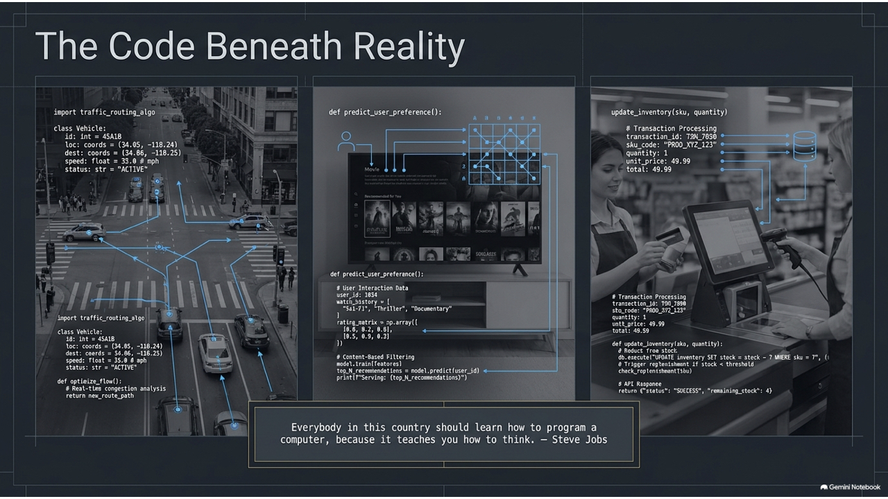
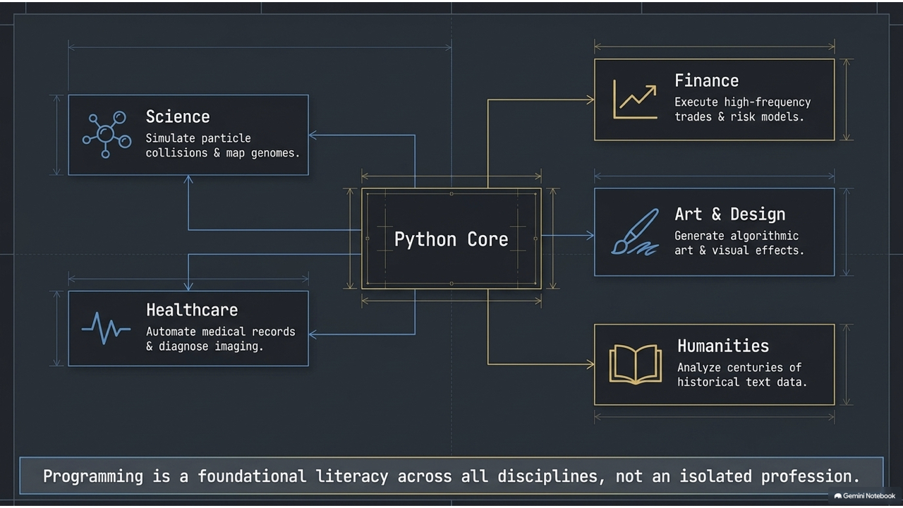
「學習寫程式能拓展你的心智，幫助你更好地思考。它創造了一種我認為在所有領域都有幫助的思維模式。」 — 比爾·蓋茲 (Bill Gates), 微軟公司聯合創辦人
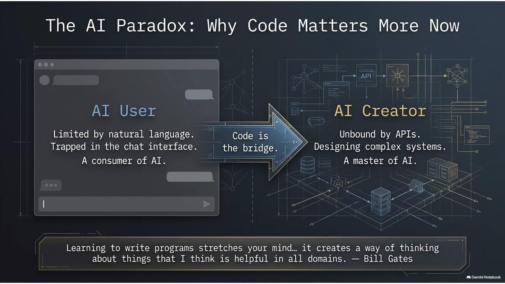
起源：吉多·范羅蘇姆 (Guido van Rossum) 於 1989 年創立，期望打造一個兼具優雅與強大，又避免封閉性的新語言。
命名：靈感來自 BBC 喜劇《蒙提·派森的飛行馬戲團》(Monty Python's Flying Circus)。
核心精神：
"Life is short, use Python" (人生苦短，我用 Python)
知名應用案例：
NumPy
Pandas
Scikit-learn
TensorFlow
PyTorch
由 Tim Peters 撰寫，引導開發者寫出優美、可讀的程式碼：
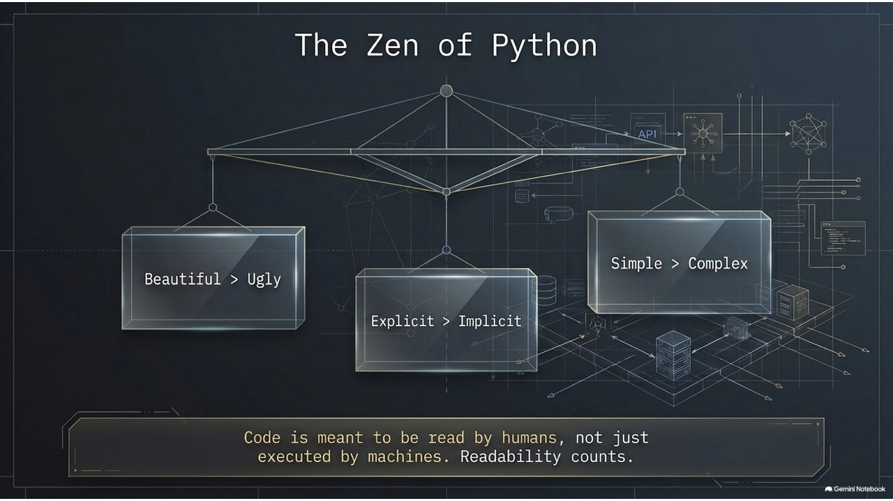
學習程式設計的核心在於培養運算思維 (Computational Thinking)：將複雜問題拆解、模式化，並設計解決步驟。
運算思維是為你的專業賦能，幫助你親手打造解決方案。
Python 語言是由誰在 1989 年創立，其命名靈感來自什麼？
A. Bjarne Stroustrup, 蟒蛇
B. Dennis Ritchie, 飛行馬戲團
C. Guido van Rossum, 飛行馬戲團
D. James Gosling, 蟒蛇
解析：
f-string
match-case
版本建議：請使用 Python 3.10 或以上（推薦 3.12 或 3.13）。
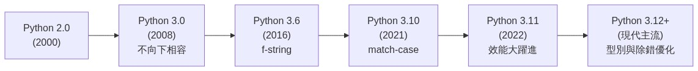
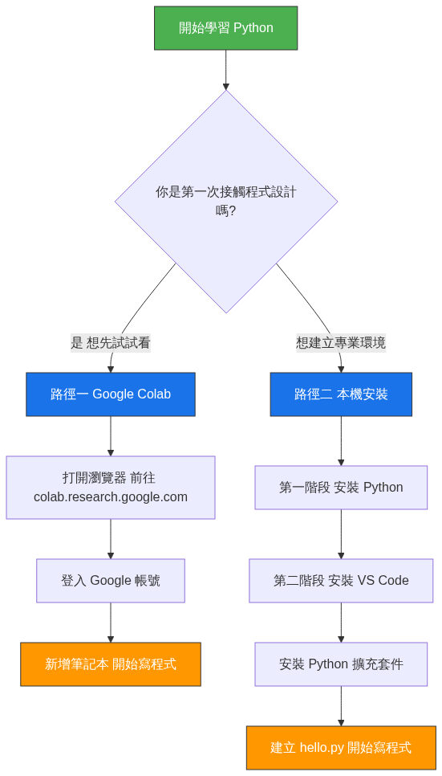
colab.research.google.com
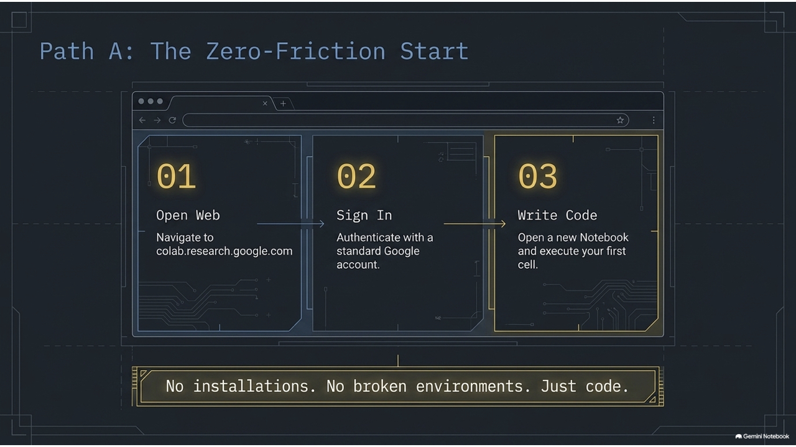
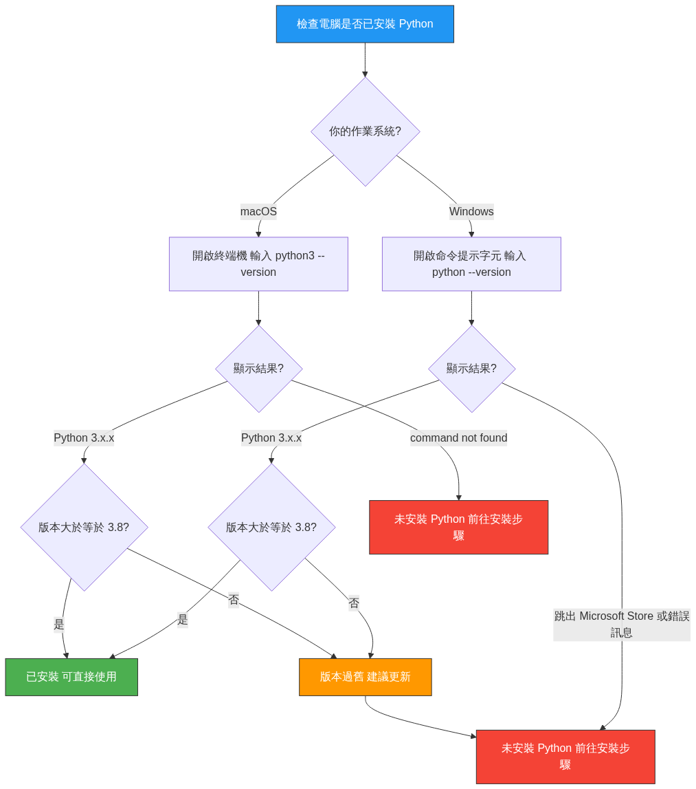
python --version
python3 --version
Mac 請使用 python3 指令，避免呼叫到系統舊版環境。
python3
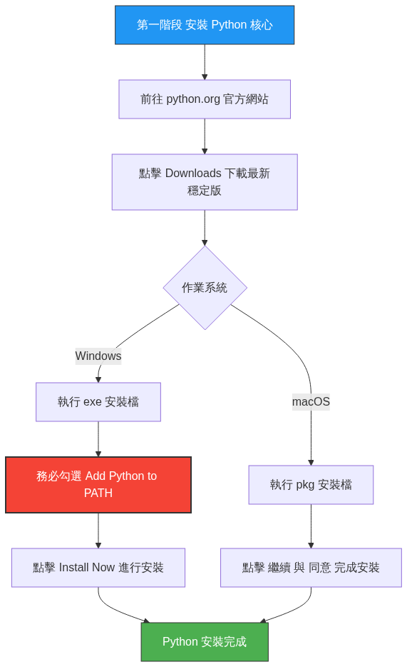
Install Now
.pkg
Ctrl+Shift+X
Cmd+Shift+X
Python
hello.py
print("Hello, World!")
SyntaxError
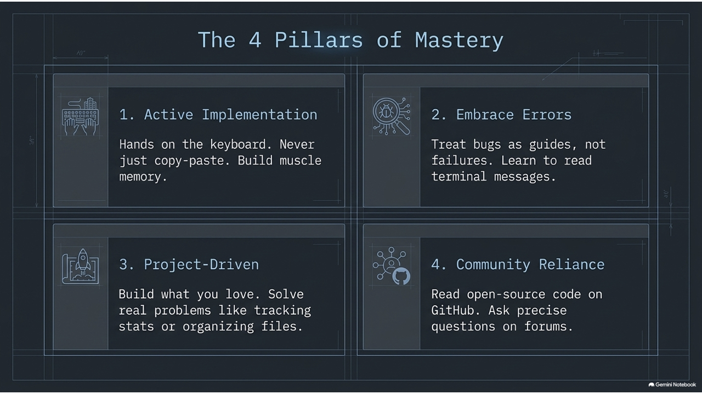
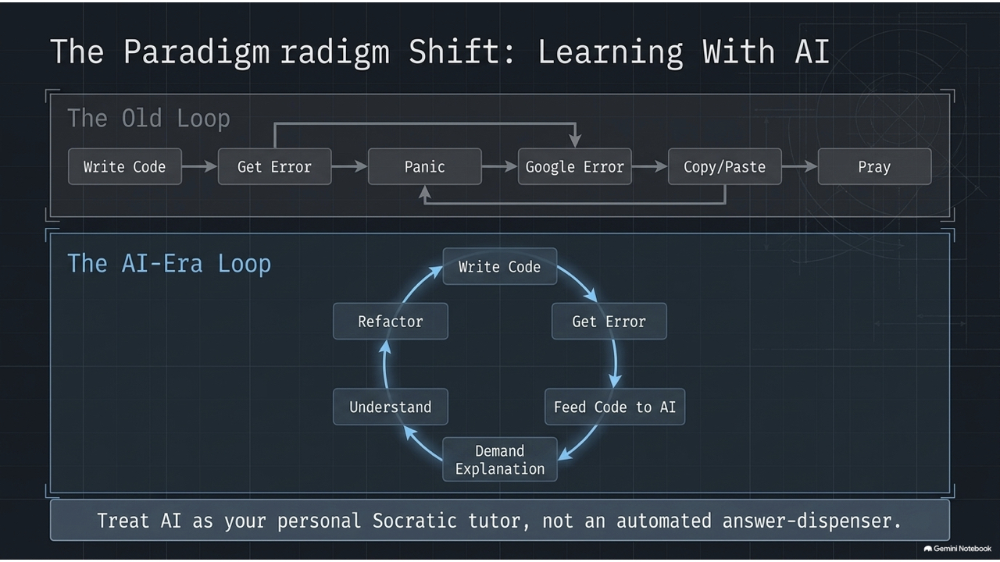
一個優質的 AI 提問應該包含：
糟糕的提問：「我的程式碼壞了，幫我改一下。」
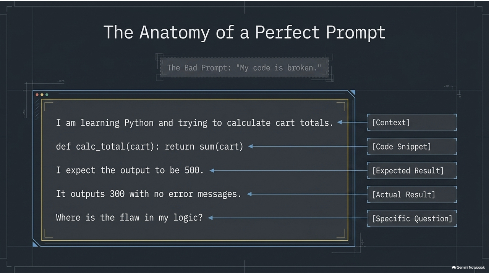
我們結合了 OJ (線上解題系統) 與 AI 智慧導師，打造個人化的程式學習路徑：
Accepted
Wrong Answer
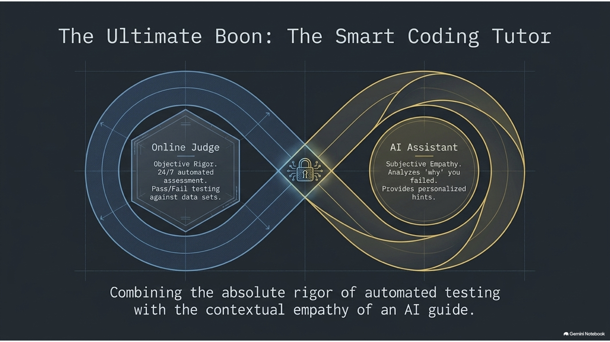
有了 AI 輔助工具（如 ChatGPT、Cursor 等）可以自動生成程式碼，我們是否還需要花時間手動撰寫和練習程式語法？請分享你的看法與體驗。
「Life is short, use Python.」
祝學習順利！